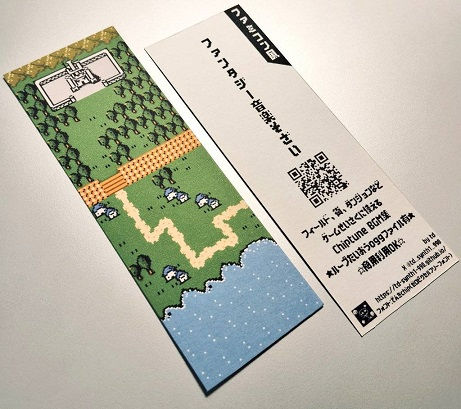

九州ピクセルマルシェ2出展日記 - 02
2026年4月28日
音楽、ドット絵
九州ピクセルマルシェ2がもうすぐ
かぶとやもどきさん(@kabutoyamodoki)主催のドット絵・ピクセルアートイベント「九州ピクセルマルシェ2」が2026年5月4日（月祝）に福岡県の天神で開催されます。

制作もだいぶ進んできたところで現在の進捗を載せます。
栞を作っていく
▼栞の2デザイン目。まだ途中ですが手前と奥がある感じで、なるべく色数少なめにと考えています。
手前に人と木、奥に塔。まだちょっと寂しいですね。
▼前回のブログで紹介した、マップ風の栞が刷り上がりました。

Twitterにも書きましたが裏面デザイン、印刷、裁断はAyasaさんによるものです。多大なる感謝。
曲を作っていく
いくつか曲ができつつあります。できつつありますって、もう約一週間しかないのですけどね。
▼暗くて重いダンジョンの感じですが、もう何種類かあった方がよいかな、とも思います。
▼戦闘曲2種類目。もうちょっと細部を詰めたいですね。
▼戦闘に勝った時のファンファーレ。
▼宿屋で泊まった時の短いジングルみたいな。おやすみなさい。
それでは今後も進捗を載せていきますね。